As we move into our final section, it’s time to dwell on our final mantra:
Ink is cheap. Electrons are even cheaper.
This is a fancy, dogmatic way to say: Make more than one chart. It’s rare that your first try is going to produce your best looking output. Play around with your data set, try out different visuals, and keep the concepts we’ve talked about in mind. Your graphs will be all the better for it. In this section, we’ll talk about solutions to some of the most common problems people have with making charts:
Dealing with big data sets
Think back to the diamonds data set we used in the last section. It contains data on 54,000 individual diamonds, including the carat and sale price for each. If we wanted to compare those two continuous variables, we might think a scatter plot would be a good way to do so:
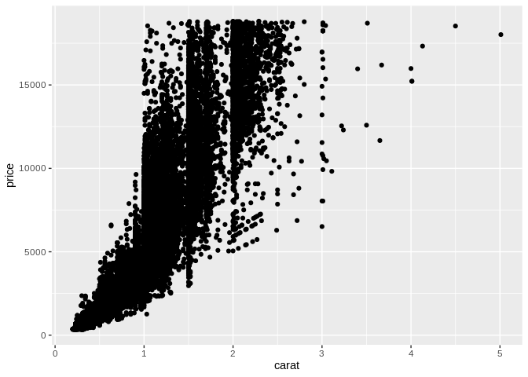
Unfortunately, it seems like 54,000 points is a few too many for this plot to do us much good! This is a clear case of what’s called overplotting – we simply have too much data on a single graph.
There are three real solutions to this problem. First off, we could decide simply that we want to refactor our chart, and instead show how a metric – such as average sale price – changes at different carats, rather than how our data is distributed:
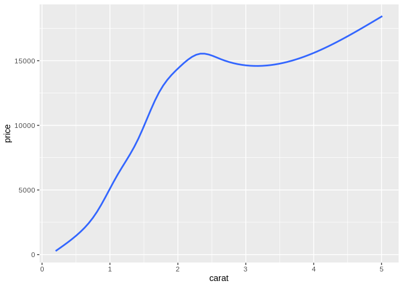
There are all sorts of ways we can do this sort of refactoring – if we wanted, we could get a very similar graph by binning our data and making a bar plot:
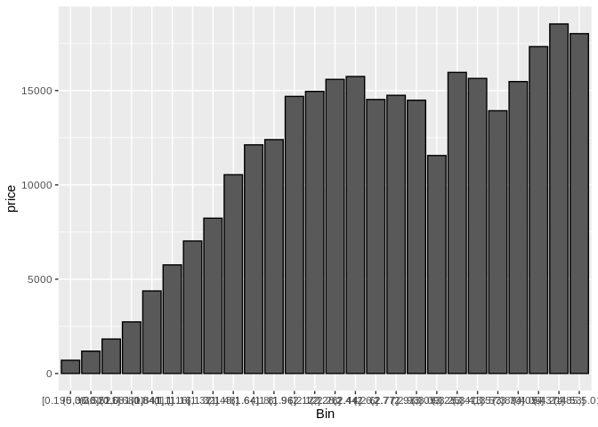
Either way, though, we’re not truly showing the same thing as was in the original graph – we don’t have any indication of the actual distribution of our data set along these axes.
The second solution solves this problem much more effectively – make all your points semi-transparent:
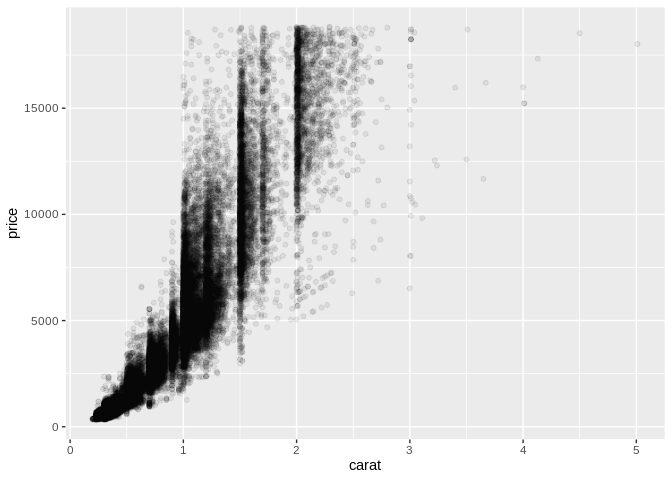
By doing this, we’re now able to see areas where our data is much more densely distributed, something that was lost in the summary statistics – for instance, it appears that low-carat diamonds are much more tighly grouped than higher carat ones. We can also see some dark stripes at “round-number” values for carat – that indicates to me that our data has some integrity issues, if appraisers are more likely to give a stone a rounded number.
The challenge with this approach comes when we want to map a third variable – let’s use cut – in our graphic. We can try to change the aesthetics of our graph as usual:
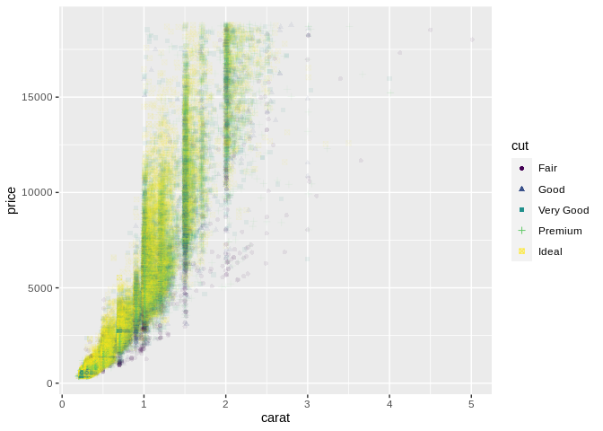
But unfortunately the sheer number of points drowns out most of the variance in color and shape on the graphic. In this case, our best option may be to turn to option number three and facet our plots – that is, to split our one large plot into several small multiples:
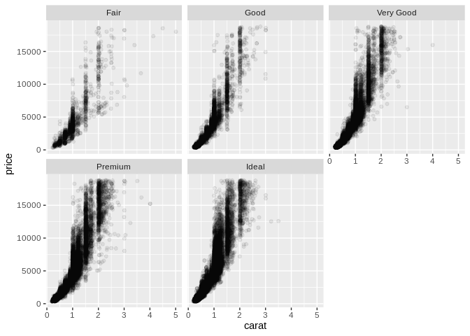
Remember: Ink is cheap. Electrons are even cheaper. Make more than one graph.
By splitting out our data into several smaller graphics, we’re much better able to see how the distribution shifts between our categories. In fact, we could use this technique to split our data even further, into a matrix of scatter plots showing how different groups are distributed:
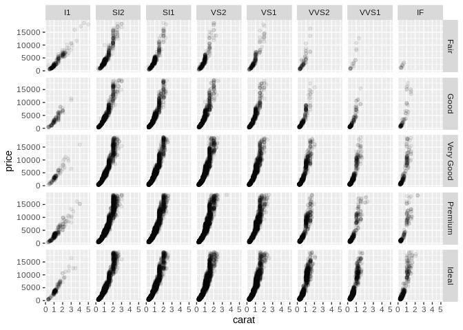
One last, extremely helpful use of faceting is to split apart charts with multiple entangled lines: 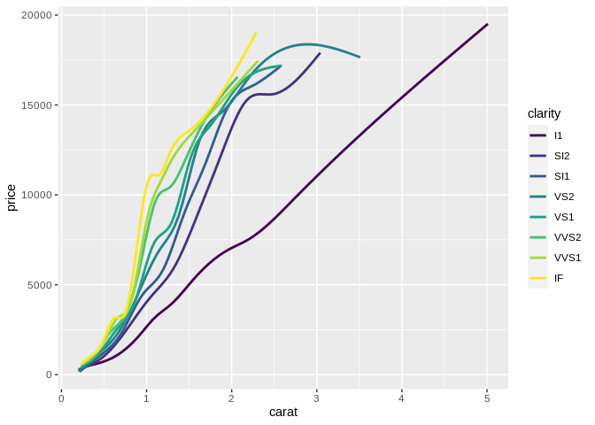
These charts, commonly referred to as “spaghetti charts”, are usually much easier to use when split into small multiples:
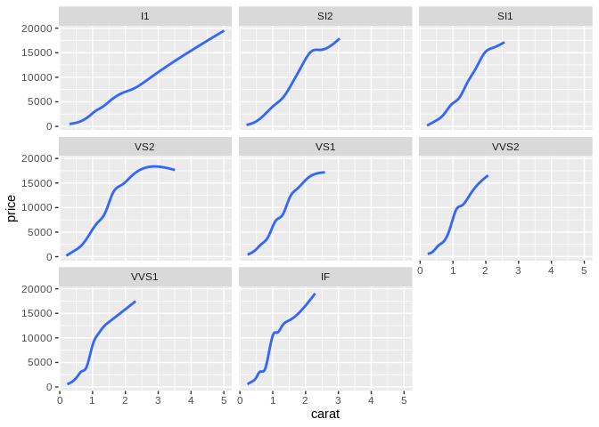
Now, one major drawback of facet charts is that they can make comparisons much harder – if, in our line chart, it’s more important to know that most clarities are similar in price at 2 carats than it is to know how the price for each clarity changes with carat, then the first chart is likely the more effective option. In those cases, however, it’s worth reassessing how many lines you actually need on your graph – if you only care about a few clarities, then only include those lines, and if you only care about a narrow band of prices or carats, window your data so that’s all you show. The goal is to make making comparisons easy, with the understanding that some comparisons are more important than others.
Dealing with chartjunk
Cast your mind back to the graphic I used as an example of an explanatory chart:
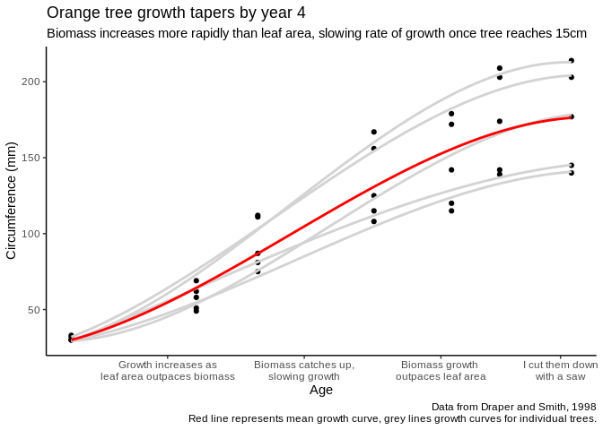
You might have noticed that this chart is differently styled from all the others in this course – it doesn’t have the grey background or grid lines or anything else.
Think back to our second mantra: everything should be made as simple as possible, but no simpler. This chart reflects that goal. We’ve lost some of the distracting elements – the colored background and grid lines – and changed the other elements to make the overall graphic more effective. The objective is to have no extraneous element on the graph, so that it might be as expressive and effective as possible. This usually means using minimal colors, minimal text, and no grid lines. (After all, those lines are usually only useful in order to pick out a specific value – and if you’re expecting people to need specific values, you should give them a table!)
Those extraneous elements are known as chartjunk. You see this a lot with graphs made in Excel – they’ll have dark backgrounds, dark lines, special shading effects or gradients that don’t encode information, or – worst of all – those “3D” bar/line/pie charts, because these things can be added with a single click. However, they tend to make your graphics less effective as they force the user to spend more time separating data from ornamentation. Everything should be made as simple as possible, but no simpler; every element of your graphic should increase expressiveness or effectiveness. In short: don’t try to pretty up your graph with non-useful elements.
Another common instance of chartjunk is animation in graphics. While animated graphics are exciting and trendy, they tend to reduce the effectiveness of your graphics because as humans, when something is moving we can’t focus on anything else. Check out these examples from the Harvard Vision Lab – they show just how hard it is to notice changes when animation is added. This isn’t to say you can never use animation – but its uses are best kept to times when your graphic looking cool is more important than it conveying information.
Common Mistakes
As we wind down this section, I want to touch on a few common mistakes that didn’t have a great home in any other section – mostly because we were too busy talking about good design principles.
Dual y axes
Chief amongst these mistakes are plots with two y axes, beloved by charlatans and financial advisors since days unwritten. Plots with two y axes are a great way to force a correlation that doesn’t really exist into existence on your chart, through manipulation of your units and axes. In almost every case, you should just make two graphs – ink is cheap. Electrons are even cheaper.
For an extremely entertaining read on this subject, check out this link. I’ve borrowed Kieran’s code for the below viz – look at how we can imply different things, just by changing how we scale our axes!
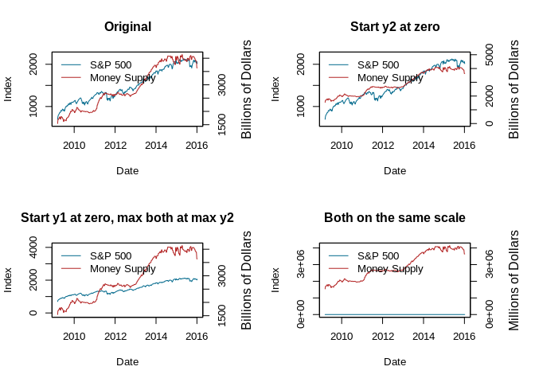
Overcomplex visualizations
Another common issue in visualizations comes from the analyst getting a little too technical with their graphs. For instance, think back to our original diamonds scatter plot:
Looking at this chart, we can see that carat and price have a positive correlation – as one increases, the other does as well. However, it’s not a linear relationship; instead, it appears that price increases faster as carat increases.
The more statistically-minded analyst might already be thinking that we could make this relationship linear by log-transforming the axes – and they’d be right! We can see a clear linear relationship when we make the transformation:
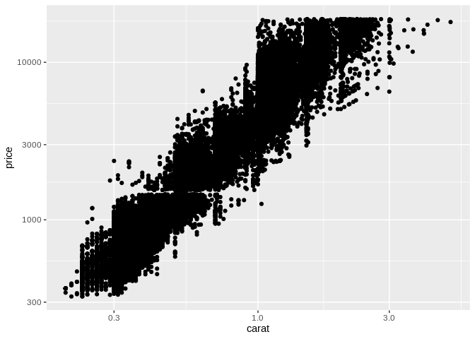
Unfortunately, transforming your visualizations in this way can make your graphic hard to understand – in fact, only about 60% of professional scientists can even understand them. As such, transforming your axes like this tends to reduce the effectiveness of your graphic – this type of visualization should be reserved for exploratory graphics and modeling, instead.
Conclusion
And that just about wraps up this introduction to the basic concepts of data visualizations. Hopefully you’ve picked up some concepts or vocabulary that can help you think about your own visualizations in your daily life. I wanted to close out here with a list of resources I’ve found helpful in making graphics – I’ll keep adding to this over time:
- When picking colors, I often find myself reaching for one of the following tools:
- ColorBrewer provided most of the palettes for these graphics
- ColorSupply makes picking custom colors easier
- Viridis provides beautiful, colorblind-friendly palettes for use (though this resource is a little harder to understand)
- I used the following resources in putting this post together:
- Hadley Wickham’s Stat 405 Course, particularly the lecture on effective visualizations (I’ve lifted “perceptual topology should match data toplogy”, “make important comparisons easy”, and “visualization is only one part of data analysis” directly from his slides)
- Jeffrey Heer’s CSE 442 lecture on visualizations, particularly the definitions for expressiveness and effectiveness